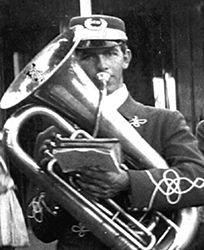
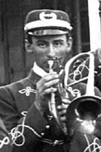
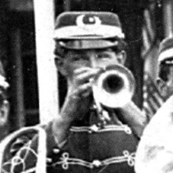
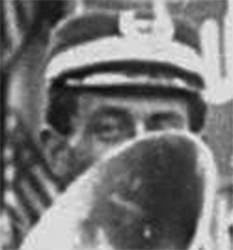
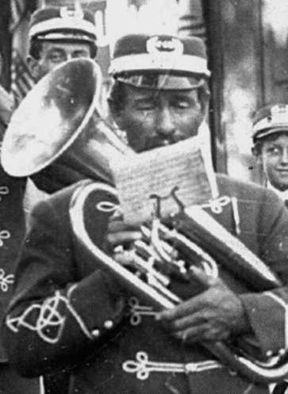
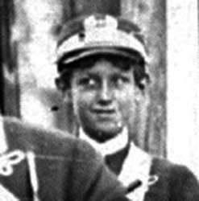
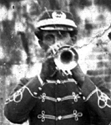
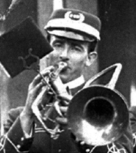
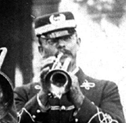
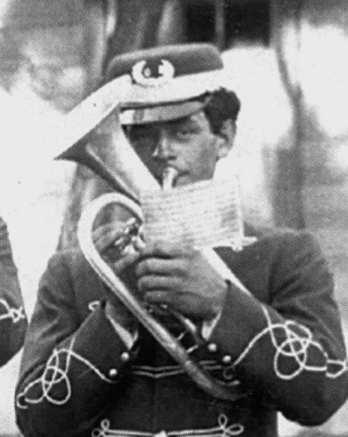

Burt Yuill
1882 to 1962 Born 12 Oct 1882 in Columbia and died 13 Sept 1962 in Crescent City, Del Norte County, Ca.


George E Nash
1885 to 1961 George E Nash. Married Catherine C. Died in Santa Clara.

Ed Kress
1865 to 1909 Edward Kress born June 1865 in Columbia, Tuolumne County, California
and died 26 JAN 1909 in Columbia, Tuolumne County, California.

Frank P Nash.
1882 to ? Frank P Nash. Married 5 Oct 1918 in Montesano, Chehalis, Washington, to Maude N Lane.

John Warren Nash Sr.
1852 to 1951 John Warren Nash Sr. Married on 19 Jan 1879 to Ellen T Costello, an Irish girl from New York.

Albert Kress (drummer)
1891 to 1972 Albert August Kress born 24 May 1891 in Columbia, Tuolumne, California
and died 6 OCT 1972 in Berkeley, Alameda, California

Frank Pedro
1878 Frank Pedro.

Arthur Napolean
1878 Arthur Napolean.

William Koch Jr.
1878 William Koch Jr.

John Warren Nash Jr.
1881 Aug to ? John Warren Nash Jr.
This page is created for the benefit of the public by
Floyd D. P. Øydegaard.
Email contact:
fdpoyde3 (at) Yahoo (dot) com
A WORK IN PROGRESS,
created for the visitors to the Columbia State Historic park.
© Columbia State Historic Park & Floyd D. P. Øydegaard.